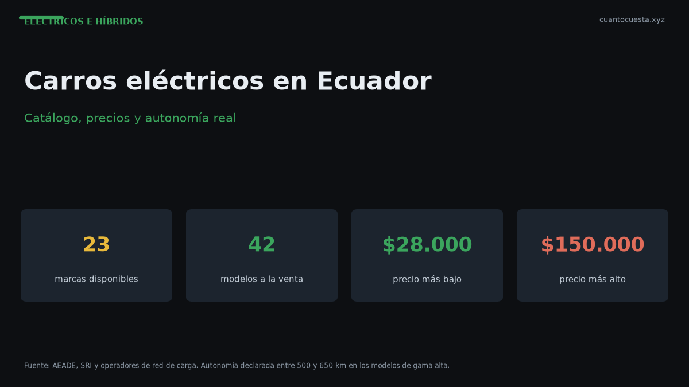

Carros eléctricos en Ecuador 2026: catálogo, precios y autonomía real
En Ecuador hay 23 marcas y 42 modelos eléctricos, entre $28.000 y $150.000. Catálogo, autonomía real en sierra y costa, y qué revisar antes de comprar.

En Ecuador hoy se venden carros 100% eléctricos de 23 marcas y 42 modelos, con precios que van desde $28.000 hasta $150.000. El piso del mercado ya no es un experimento: son modelos de entrada con autonomía declarada de 500 a 650 km.
El crecimiento es la parte llamativa. En 2025 se vendieron 4.276 vehículos 100% eléctricos, contra 1.088 en 2024 — casi cuatro veces más en un solo año. Y en el primer semestre de 2026, uno de cada cuatro autos vendidos en el país fue híbrido o eléctrico.
Dato verificado: los eléctricos puros siguen siendo solo el 3% de las ventas totales de vehículos en 2026. El otro gran bloque del sector electrificado son los híbridos. Es un mercado en crecimiento, no un mercado maduro.
El panorama en números
| Indicador | Valor | Año |
|---|---|---|
| Marcas con oferta eléctrica | 23 | 2026 |
| Modelos disponibles | 42 | 2026 |
| Rango de precios | $28.000 – $150.000 | 2026 |
| Cuota de eléctricos en ventas | 3% | 2026 |
| Cuota de híbridos + eléctricos | 18% | 2026 |
| Eléctricos vendidos | 4.276 unidades | 2025 |
| Eléctricos vendidos | 1.088 unidades | 2024 |
| Vehículos nuevos totales | 124.505 unidades | 2025 |
El mercado general también creció: 124.505 vehículos nuevos en 2025 (+15%), y el primer semestre de 2026 cerró con 78.185 unidades (+41,4%), un récord histórico. Los eléctricos crecen más rápido que el mercado, pero desde una base pequeña.
Quién vende eléctricos en Ecuador
Dos marcas concentran la conversación, por razones distintas.
BYD vendió 2.916 unidades en 2025, un +243,1% frente a las 850 de 2024. Su oferta en Ecuador es 100% eléctrica: no vende híbridos ni combustión en el país. Es, de lejos, la marca que más ha empujado el volumen del segmento.
Kia llega con la red más estructurada. Ofrece 8 vehículos eléctricos en Ecuador — EV2, EV3, EV4, EV5, EV6, EV9, PV5 Pasajeros y PV5 Carga — con autonomías declaradas de 500 a 650 km. Kia fue la primera marca en introducir vehículos 100% eléctricos en Ecuador, en 2014, con el Soul, y hoy respalda la oferta con 20 electrolineras de carga ultrarrápida, más de 200 puntos de carga media, 49 talleres autorizados en movilidad eléctrica y más de 12 millones de dólares en stock de repuestos.
| Marca | Oferta en Ecuador | Autonomía declarada | Respaldo |
|---|---|---|---|
| BYD | 100% eléctrica | No detallada por modelo en esta ficha | Crecimiento +243,1% en 2025 |
| Kia | 8 modelos eléctricos | 500 – 650 km | 20 electrolineras ultrarrápidas, 200+ puntos de carga media, 49 talleres |
Las otras 21 marcas completan el catálogo. No tenemos el desglose modelo por modelo verificado, así que no lo inventamos: si buscas una marca específica, confirma su oferta vigente y precios directamente con el concesionario, porque cambian con cada año-modelo.
Cuánta autonomía tienes realmente
Este es el punto donde la ficha técnica y la vida real se separan.
La autonomía declarada se mide en ciclos estandarizados, en condiciones que no se repiten en la ruta Quito–Guayaquil. En uso real influyen cinco cosas:
- Topografía. La sierra trabaja cuestas largas y regeneración en bajada. La costa trabaja planicie y calor. No se comportan igual.
- Aire acondicionado. En la costa es uso permanente; en la sierra, intermitente.
- Velocidad sostenida. A 100-120 km/h en autopista el consumo sube más que en ciclo urbano.
- Temperatura de la batería. El calor sostenido de la costa y el frío de altura afectan la carga y la entrega.
- Carga útil. Cinco ocupantes y maletero lleno no rinden lo mismo que el conductor solo.
Estimación honesta: para un eléctrico con autonomía declarada de 500 km, espera un rango real de uso diario bastante menor que la cifra de ficha. No publicamos un porcentaje de pérdida verificado para Ecuador porque no tenemos ese estudio; lo que sí es verificable es que el rango declarado no es promesa de rango real.
Antes de comprar, pide al concesionario una prueba de manejo en tu ruta habitual, con el aire acondicionado encendido. La autonomía que importa es la de esa ruta, no la del catálogo.
Sierra vs costa: qué cambia en la práctica
| Factor | Sierra (Quito, Cuenca, Ambato) | Costa (Guayaquil, Manta, Machala) |
|---|---|---|
| Perfil de ruta | Cuestas y descensos | Planicie |
| Ventaja | Frenado regenerativo recupera energía en bajada | Consumo más estable |
| Desventaja | Subidas sostenidas exigen más del motor | Aire acondicionado constante todo el año |
| Efecto neto | Rango variable según el recorrido | Rango más predecible, pero castigado por clima |
En la sierra, un recorrido plano y urbano rinde distinto que subir a un valle interandino. En la costa, el consumo es más lineal, pero el aire acondicionado nunca se apaga. Ninguno de los dos es "mejor": depende de tu ruta.
Qué revisar antes de firmar
Cuatro verificaciones que separan una buena compra de un problema:
- Autonomía en tu ruta real. Prueba de manejo, ida y vuelta, con A/C.
- Respaldo de taller. ¿Hay servicio autorizado para movilidad eléctrica en tu ciudad? El mantenimiento eléctrico exige equipamiento de diagnóstico específico y personal capacitado, y eso no está disponible en todos los talleres del país.
- Disponibilidad de repuestos. Parte de los repuestos de eléctricos debe importarse. Pregunta plazos reales, no promesas.
- Dónde vas a cargar. Si no tienes cargador en casa, la ecuación cambia por completo. Lo detallamos en nuestra guía de la red de carga.
Veredicto
El catálogo eléctrico ecuatoriano pasó de curiosidad a opción real: 23 marcas, 42 modelos y precios desde $28.000. BYD empujó el volumen, Kia construyó la infraestructura de carga y servicio, y el mercado general acompaña con un 2026 récord.
Pero el eléctrico puro todavía es el 3% de las ventas. No compres por tendencia: compra si tu ruta diaria cabe en la autonomía real, si tienes dónde cargar y si hay respaldo técnico cerca. Si esas tres condiciones no se cumplen, un híbrido o incluso un gasolina eficiente puede seguir siendo la decisión correcta.
Los precios y la disponibilidad por modelo cambian con cada año-modelo. Confirma siempre la oferta vigente en el concesionario antes de decidir.
Sigue leyendo
Costo por kilómetro: eléctrico vs gasolina en Ecuador (cálculo real)
Cargar un eléctrico cuesta $8 a $10 y la gasolina $3,21 el galón. Cuánto cuesta cada kilómetro
Híbrido vs eléctrico vs gasolina en Ecuador: cuál conviene según tu uso
Comparación por perfil de uso en Ecuador: ciudad, carretera, kilometraje y acceso a cargador. T
Incentivos tributarios para vehículos eléctricos e híbridos en Ecuador
Qué incentivos tienen los eléctricos y los híbridos en Ecuador, en qué se diferencian y cómo se
Red de carga en Ecuador: dónde, cuánto y cuánto tarda cargar
Ecuador tiene 94 puntos de recarga: 48 en Quito y 11 en Guayaquil. Tiempos reales de carga rápi
Cómo usamos estos datos
Las cifras de esta guía provienen de fuentes públicas oficiales y tarifarios de concesionarios publicados. Los valores son referenciales: tasas municipales, promociones y precios de repuestos varían. Verifica siempre en la entidad o concesionario antes de decidir.